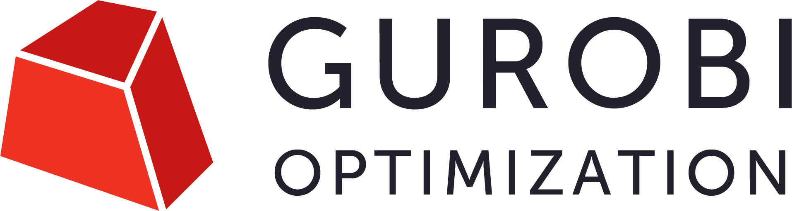

|  | gurobi.com | Reference Manual | Customer Support |
You have successfully installed version 11.0.1 of the Gurobi Optimizer.
You'll find instructions for setting up your Gurobi license in this document, as well as a list of supported platforms, and Release Notes and guidelines for converting existing Gurobi code to run with this new version. Once you have finished browsing this document, you should refer to the Detailed Release Notes, the Getting Started Knowledge Base article, the Example Tour, the Reference Manual, or the Remote Services Reference Manual to get started using the Gurobi Optimizer.
To obtain a Gurobi 11 license, you will need to visit
the Gurobi User
Portal. If you are a commercial user under maintenance, you should see
your Gurobi 11 license
under Licenses. If
you would like to request a free academic license, you can do so from
the Licenses Request section. Once you have a license in
the Gurobi User
Portal, you will need to follow the instructions for installing or
downloading a license by clicking on the Install
or Open button next to your license.
In addition to performance enhancements, Gurobi 11.0 adds the following new features:
Please refer to the Detailed Release Notes for more details, including supported platforms and code conversion notes. All bug fixes listed by version can be found on our website.
Note that this software is covered by the Gurobi End User License Agreement. By completing the Gurobi installation process and using the software, you are accepting the terms of this agreement.
Thank you for using Gurobi products!
© 2024 Gurobi Optimization. All Rights Reserved.